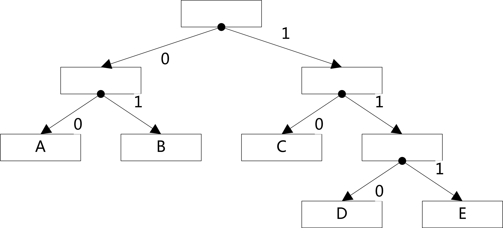

HPACK中的霍夫曼编码¶
HTTP2.0[2]中头部采用了二进制格式，具体编码在HPACK[3]也已经详细解释了。
HPACK中对于字符串使用了霍夫曼编码[4]来让传输更有效率，但是对于霍夫曼的解码过程一直没想
到如何仅仅使用查表的方法来进行。在看过一些论文和博客之后勉强想到了一个简单的可能不是很有效率的查表办法。
下图是简单的霍夫曼编码树的展示，简洁说明5个符号的编码构造过程：
简单的霍夫曼编码树
从编码树中我们可以获取符号的编码表：
| Symbol | code as bits | len in bits |
|---|---|---|
| A | 00 | 2 |
| B | 01 | 2 |
| C | 10 | 2 |
| D | 110 | 3 |
| E | 111 | 3 |
霍夫曼解码的过程常规仍是构造和编码时一样的霍夫曼树，如图1，然后从根节点开始一次读取每一个bit为
0时向左孩子行进，为1时向右孩子行进，直到到达叶子节点，获取解码后的符号。
这是解码一个符号的步骤，缺点是在HAPCK中，各个符号的编码已经知晓了，这样可以根据编码去反向构造霍夫曼树，
但是需要大量的分配内存及我们仅仅想使用它的解码功能，并且当在程序中解码树根节点不方便保存及释放。
这里我考虑使用一个类似与有限自动机的方法来实现解码，首先将每一个编码按4bit分成若干组，HPACK中最长的编码
长度是30，每一个编码最多能分成8组。分好后，将所有组编码组成一颗16叉树，并且让孩子节点的索引值与分组的值相等。这样的话
可以每次读取4个比特，然后得到相对应的孩子节点，如果该节点指向了一个符号，则得到了解码结果。大概过程为
- 设置当前节点为根节点
- 读取4比特存入c
- 以c的值最为孩子节点的索引获取孩子节点
- 判断孩子节点信息
- 节点对应了一个有效符号A，跳转到(1)，继续解析下一个符号
- 节点不对应任何符号，跳转到(2)
例如，HPACK中a的编码为00011，我们先分割为0001，1xxx两组，
构造解码树时按照组中每一个值是孩子节点的位置索引，而最后一个值指向终点，代表一个解码后的符号。1xxx这类的表示多个
孩子节点对应同一个解码符号，比如下图中真实表示的几个符号：
部分解码树孩子索引示意图，彩色的位代表了完整字符的位编码
解码树的生成¶
为了生成上图中解码树，需要先对编码表进行预处理，我的方法是
将所有编码分为4位一组，最长编码30位，所以最长8组
根据分割的位组构建解码树
为解码树的节点建立编号
经过这些步骤后已经建立好一个解码树了，树中每个节点有16个孩子。这样我们解码时就可以根据 4位组的值为孩子节点索引，从根节点开始行进解码。当解码完一个字符后，重新回到根节点，解码 下一个字符。
解码树的节点建立编号是为了下一步将解码树转换为状态机的形式，固定地编码在数据区。免去 每次解码都要构建解码树的麻烦。
转换为状态表¶
先定义如下的解码状态，先前的每个编码树节点将会转换16个状态，其实编码过的节点有54个。
最大的编号为0x35。所以完全可以将ending和next合并为一个字节，节省
三分之一的空间。然后对所有的节点进行序号编排，这个序号作为状态转移的依据。
完成后将state[55][16]的内容打印出来，就组成了静态的解码状态表。完整的表见源代码[1]。
解码¶
有了解码状态表后，就可以依据该表来进行解码了。
解码代码中需要仔细根据已解码的位长来计算待解码的数组索引和位索引。
编码¶
编码比较简单，计算好已编码的位长，来确定写入的数组索引和位偏移。最后不足8位的填充
EOS.
编码中所用到的符号表是在HPACK中定义的，这里不在列出了。
| [1] | 本文源代码: ../_static/hpack_huffman.c |
| [2] | HTTP2.0 RFC: https://httpwg.github.io/specs/rfc7540.html |
| [3] | HPACK RFC: https://httpwg.github.io/specs/rfc7541.html |
| [4] | huffman编码: https://en.wikipedia.org/wiki/Huffman_coding |